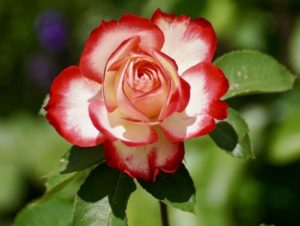
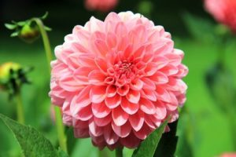
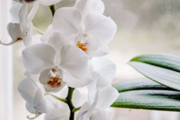
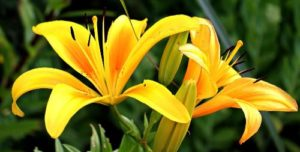
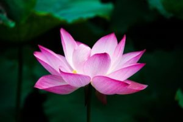
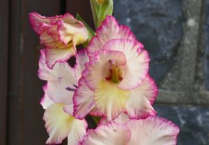
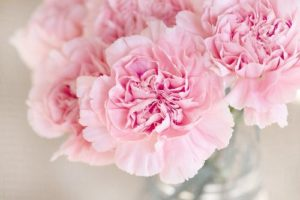
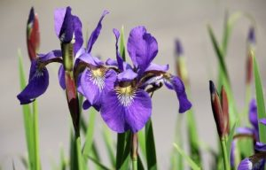

FLOWERS
Rose
Roses range in color from white to yellow to pink to dark crimson. They grow on climbing or trailing shrubs, the stems of which are notably armed with thorns in various shapes and sizes.
Dahlia
Dahlias come in a rainbow of colors, ranging in size from two-inch to giant 15-inch blooms. Often mistaken for bulbs, the roots of dahlias are actually tubers, making them closely related to other tubers, such as sunflowers, chrysanthemums, and zinnias.
Tulip
These brightly colored jewels pop up in early spring for a beautiful reminder that winter is over. They come in every shade of the rainbow, and the flowers may be ruffled, fringed, or lily-shaped, depending on the variety.
Orchid
Orchids come in a variety of colors, shapes, and sizes, depending on the variety. They have a reputation for being hard to grow, but they’re actually not that difficult when you get the hang of it. They don’t need much water, but do need to fertilizer on a regular basis.
Lily
Lilies feature substantial petals that burst open in a sunburst pattern. They also provide “swoony” scents, making them ideal for bouquets. They come in virtually every color of the rainbow, many with color contrasting speckles.
Lotus
The lotus flower grows in the murkiest of swamps and yet blooms with great beauty in a number of colors, including white, pink, and blue. It has long been revered for its resilience and beauty, and is known as a symbol of purity and transcendence.
Gladioli
Gladioli have often been referred to as sword lilies due to their long, pointed leaves. They feature distinctive tall flower spikes in a wide variety of colors. They’re quite useful in floral arrangements to provide depth and dimension due to their unique shape.
Carnation
Carnations are a variety of the dianthus flower, and feature a ruffly appearance and a spicy scent that’s truly distinctive. White carnations can be dyed virtually any color under the sun, but their natural colors include just pink, white, coral, and red.
Iris
Named after the Greek goddess of the rainbow, irises come in an extremely wide variety of colors, although most common in lavender, purple, and yellow. They range in size from 6 inches tall to four feet in height.
